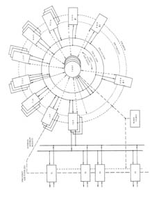

-
Computers in Spaceflight: The NASA
Experience
-
- - Chapter Five -
- - From Sequencers to Computers:
Exploring the Moon and the Inner Planets -
-
- - The Star Computer
-
-
-
-
- Researching the Reliability
Problem
-
- [149] In 1961 a
Lithuanian-born computer scientist named Algirdas Avizienis,
employed at UCLA, began research on a highly fault-tolerant
computer system for use on long-duration space missions. The
nonprogrammable version of the Central Computer and Sequencer
would soon make its first flight on Mariner Venus 1962. Even at
that early date, JPL expected to use computers on board the "Grand
Tour" spacecraft planned for the 1970s. A favorable alignment of
the outer planets would make possible a mission that could fly by
Jupiter, Saturn, Uranus, and Neptune, thus having encounters with
all the gas giants in one sweep. Such a mission would have to last
for years, with the spacecraft operating autonomously for long
periods of time. Inconvenient speed-of-light communications delays
in the exploration of the inner planets would become crippling in
an outer planets mission, requiring a spacecraft to carry its own
"brain," because the earthbound brains of its makers would be
hours away in an emergency.
-
- Avizienis' chief interest was in computer
reliability. Computer failures occurred much more frequently then
than in today's world of ICs. A computer entrusted with the
successful completion of a deep space mission could not afford to
fail before or during its long awaited encounter, so JPL and
Avizienis' interests came together at just the right time. During
the period from 1961 to 1965, the Laboratory sponsored his search
for a more fault-tolerant computer. In 1965 the reliability scheme
was settled and construction of a prototype began. The breadboard
version first ran a program in March of 1969, after a 2-year
effort at software development38. Avizienis named the computer STAR, for self
testing and repair, and the name gives a clue to the architecture.
JPL's Flight Computers and Sequencers Section of the Guidance and
Navigation Division paid for the work. Avizienis was responsible
for the concept; David A. Rennels, later a colleague at UCLA, for
the hardware; John A. Rohr, for the software. F.P. Mathur did the
reliability calculations, and the MIT Instrumentation Laboratory
developed the read-only memory, which was basically a core rope
type of memory39.
-
- [150] Avizienis used
selective redundancy to achieve reliability. On the Space Shuttle,
the on-board computers are complete redundant versions of each
other and are considered multiple computers. In the STAR, the
computer is considered a single entity with its separate
components replicated. Thus, each subsystem of STAR had several
duplicate versions of itself in the computer as spares. The key
advantage is that the spares were unpowered as long as the primary
component ran successfully. Only when there was a failure would
the spare come to life, and then power to the failed component
would be cut off. Thus, the total power consumption of the STAR
equaled, but did not exceed, that of a similar computer without
the spares, making it attractive to power-conscious spacecraft
designers40. In the 1960s, all spacecraft computers were
simplex systems. The only ultrareliable system was the Launch
Vehicle Digital Computer used on the Saturn IB and Saturn V
boosters. Its reliability was achieved by using triple modular
redundant (TMR) circuits such as those in the Common Section of
the Skylab computer system. Avizienis evaluated TMR circuitry and
found that the number of independent failures a TMR system could
tolerate before failing was much smaller than a
component-redundant computer such as STAR could
tolerate41. Also, reliability theoretically increased through
dormancy42. Mean-time-between-failure (MTBF) figures for a
component begin when the component is turned on; thus, a subsystem
with a MTBF of 1,000 hours, backed up with two identical spares,
yields a MTBF of 3,000 hours. That was the theory behind
STAR.
-
- Avizienis reasoned that failures were
either caused by transient conditions or permanent component
failures. In order to check for transient faults, STAR would
repeat the program segment in which a fault was first detected. If
the fault repeated itself, the affected component would be turned
off and its spare activated, with the program segment repeated
again. All fault detection was by hardware techniques, with
error-correcting codes included in the software43. Potentially, STAR could be an "automatic
repairman" for the entire spacecraft, if other spacecraft systems
used the same concepts44.
-
-
- Applications for
STAR
-
-
- In 1969, JPL began designing a
Thermoelectric Outer Planet Spacecraft, or TOPS. In previous inner
planet probes, the flight paths were close enough to the sun to
enable the spacecraft to use solar cells for power generation.
Outer planet missions ranged so far from the sun that solar cells
would be inadequate. TOPS would carry radioisotope thermoelectric
generators to provide electrical power.
-
-
-
[151]
-
- 
-
- Figure 5-3. The STAR computer
configuration. (From Avizienis, "Design Methods for Fault-Tolerant
Navigation Computers" JPL TR-32-1409)
-
-
- [152] Box 5-2: STAR
Architecture and Software
-
- STAR was a fixed-point machine with a
32-bit word. Using separated components for redundancy meant that
they had to be connected on a bus, which had 4-bit bytes as the
basic transfer block45. There were 16K words of read-only memory, which
Avizienis said consisted of a "braid" of transformers and
wires46. Since MIT built the device, the description almost
certainly indicates that it was a core rope similar to that used
in the Apollo Guidance Computer (AGC). The basic version used two
copies of 4K of random-access memory, with up to 12 units
attachable. Avizienis forsaw that the memory would have to be
reprogrammed in flight on a mission like Grand Tour, so provision
was made for that function47.
-
- Use of a large word size was not to
increase arithmetic power as much as to provide space for
error-checking codes. A STAR address consisted of a 16-bit field
for the address and a 4-bit check field. The address would be
multiplied by 15 (yielding 20 bits), and then stored or
transmitted along the bus during an operation. At the receiving
end, the address would be evaluated according to the following
equation:
-
- C(a) = 15-15Ia
-
- where 15Ia is the modulo residue of a.
Numeric data were handled similarly; the 28-bit operands
multiplied by 15 to get a 32-bit word. If the result of the check
operation was zero residue, the data or address was correct. If
not, STAR issued a fault signal48.
-
- STAR had three control signals. One was
the common 1-megahertz CLOCK signal. RESET indicated a return to a
standard initial state. SYNC signaled the beginning of a new
10-step instruction cycle49. If a fault was detected, the computer would return
to the last SYNC point and begin executing instructions from
there. If the 10 instructions after the SYNC were executed
successfully, STAR sent a new SYNC signal.
-
- STAR's read/write memory units were
different in that they would recognize either their hard-wired
name or an assigned name50. In this way, if a memory unit and its backup copy
failed, another memory unit could be assigned its name, loaded
with the appropriate data, and then act like the original memory
unit, thus avoiding the necessity of changing all the addresses in
the software. When an instruction appeared on the memory in (MI)
bus, the memory unit that had that address put its contents on the
memory out (MO) bus, and the Arithmetic Processor or other
component loaded it in for processing51.
-
- [153] The heart of the
STAR was the Testing and Repair Processor, or TARP. Whereas the
other components of STAR had either one or two unpowered spares,
the TARP had three active versions and two inactive spares.
Functions of the TARP were to maintain the rollback points to
which the software returned after a failure detection, to diagnose
failures, and to check itself. Each time an error check was made,
TARP's three units would vote. If all three or two of three
indicated a failure, then the TARP issued an unconditional
transfer to the rollback point. In the case of a 2-to-1 vote, the
dissenting unit was considered failed, and was shut off as a spare
was activated52. Another TARP disagreement caused the last spare to
be activated. On the third TARP failure, one of the previously
shut down units would be reactivated, so that there were always
three TARPs in action at any given time. Avizienis thought that
since most failures would be transients, it would be safe to
reactivate a unit. After all, if it disagreed again, it would be
shutdown.
-
- John A. Rohr's software group did not
begin work until 1967. An assembler, loader, and simulator were
developed on a UNIVAC 1108 mainframe computer owned by
JPL53. Software was all done in assembler, with a rich
set of 180 single address instructions54. The assembler did allow some types of higher level
statements, mostly for arithmetic. For instance, COMP Y=Y + 1 was
directly compiled into the several machine instructions necessary
for execution55. In this way, some of the tedium associated with
assembly language programming was avoided. A floating-point
subroutine to extend the calculating power of the machine was
planned, but there is no evidence it was ever
Implemented56. It would have had to have been done in software.
The STARlet, a limited breadboard version, ran its first program
on March 24, 196957. The full system, save the timing processor, was on
the bread-board by April 197858.
- STAR was considered as the on-board
computer for TOPS59. A control computer subsystem for the TOPS would
use STAR technology, the full 32-bit word, but just 4K of
read-only memory and 8K of the read/write
memory60. The chief physical obstacle to using STAR on a
spacecraft was size. The breadboard version filled 100 cubic feet.
Avizienis wanted to reduce it to 2 cubic feet and 50
watts61. By 1971, the requirements reduced to 1 cubic foot,
40 pounds weight, and 40 watts power62. Even though progress was made in this area, STAR
never flew on a spacecraft. Components built to STAR
specifications found their way into the NASA Standard Spacecraft
Computer 1 (NSSC-1), used in earth orbital operations, but the
concept of selective redundancy was not incorporated into flight
computers to the extent desired by Avizienis.
-
- STAR did not find its way to the outer
planets for two reasons. [154] One was budget
cuts63. Even though the Voyagers were launched in the late
1970s, the original TOPS program and the Grand Tour were canceled
due to budget constraints. The fact that Voyager 2 is essentially
executing the Grand Tour is a bonus. On-board computers used on
Voyager developed from a different line. So, even though Avizienis
designed a Super-STAR with a microprogrammable processor using
large-scale integration technology, which seemed certain to
fulfill the requirements of size, power, and weight, he never sold
it to JPL64. A second reason STAR never flew was that engineers
were concerned that the STAR's TARP and its failure switches were
a weak point. The concept of a TARP, as with TMR, is always
limited by the question of "who tests the
tester?"65. The actual switches entrusted with powering down a
failed component and charging up another are the weakest link in
the system. At one point, JPL subcontracted to the Stanford
Research Institute for work on a magnetic switch, but apparently
the results were not satisfying66.
-
- The STAR research program was not a waste
even though the computer itself did not fly. It contributed to the
development of new, reliable electronic components, such as those
used on NSSC-1. It also provided a contrast to the development
track being taken on the Mariner and Viking Orbiter spacecraft.
One engineer involved in Viking Orbiter computer development said
that STAR-type hardware was considered but deemed too complex. He
thought that a two machine system turning in parallel would be
simpler and as reliable for a Mars
orbiter/lander67. Even though the technology of computers was not
ready for STAR, it remains an innovative design and one of the few
computer research projects funded by NASA. The principles
developed remained valid for possible future applications that JPL
was about to begin.
-
- By far the most direct and far-reaching
contribution of the STAR program to the future of JPL projects was
John Rohr's work on the assembler/linker/loader for the software.
It was the basis for the command sequence translators used through
the present. Though extensively reworked and redesigned, the
fundamental concepts were established by Rohr during the STAR
development68.